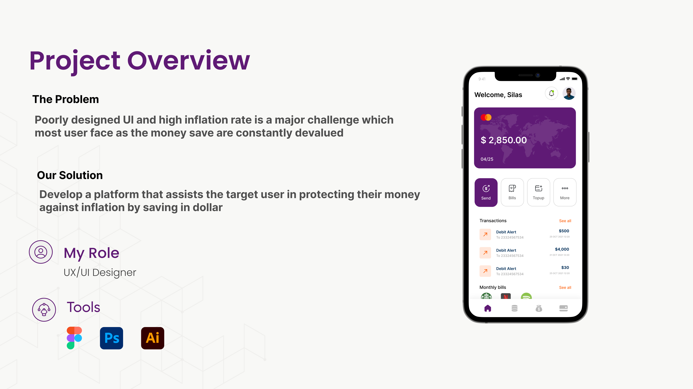

Secure Fund is a mobile banking app that allows you to perform daily transactions, save money, and invest all from the convenience of your smartphone. The money is saved and invested in dollars in order to earn a higher rate of return than inflation, preserving your purchasing power and increasing your wealth.
